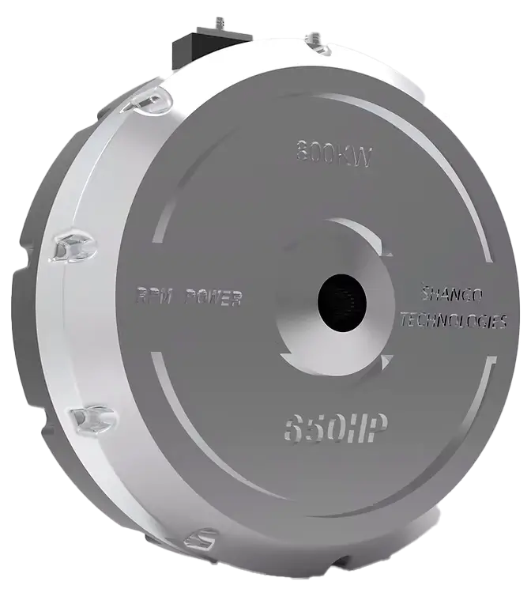

Black Widow
This 1400hp Hyper Drive Unit powered by Shango Technologies puts unparalleled electrical power right at your fingertips on the steering wheel, offering instant responsiveness and precise control. This cutting-edge system will be integrated into the first-ever all-electric muscle race car, marking a revolutionary step in automotive performance.

Shango Hyper Drive
The 650hp Hyper Drive Unit, powered by Shango Technologies, is a cutting-edge marvel of engineering designed to deliver unparalleled performance. With its impressive 650 horsepower output, this advanced drive unit combines power and efficiency in a way that sets new standards in automotive technology. Shango Technologies has engineered the Hyper Drive Unit to push the boundaries of speed and acceleration, while maintaining exceptional precision and control. This innovative system is poised to revolutionize the market, offering a glimpse into the future of high-performance vehicles.